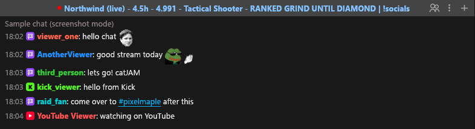
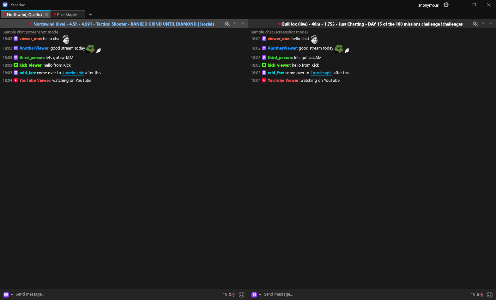
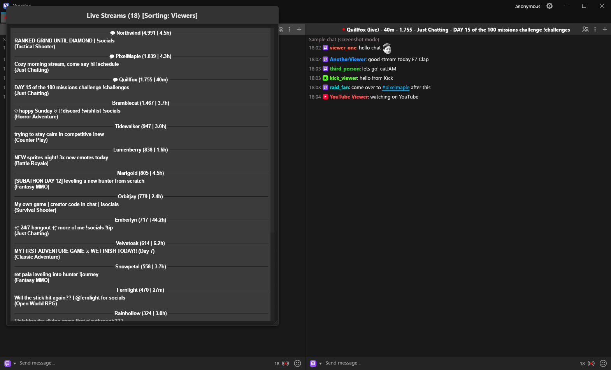
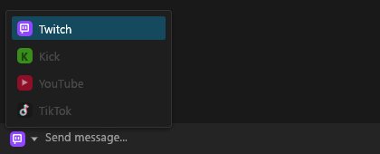
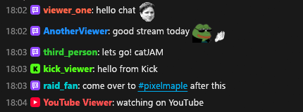
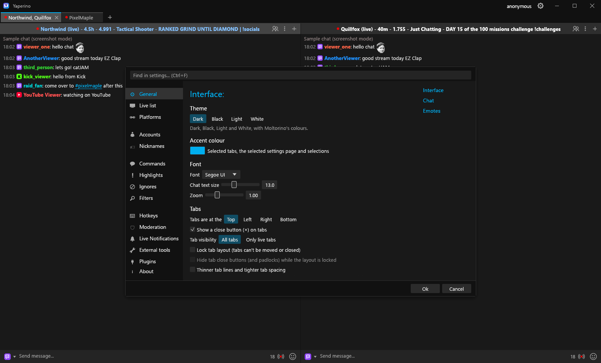

One chat, every platform
Join a streamer once and Yaperino joins their chat on Twitch, Kick, YouTube and TikTok together. Every message starts with its platform's logo, so you always know where it came from.

Yaperino puts every stream's chat in one window. It works like Chatterino, with tabs, splits and hotkeys, and adds a Chatty-style list of the channels you follow that are live right now.
For Windows, macOS and Linux · free and open source · {{VERSION}}

Join a streamer once and Yaperino joins their chat on Twitch, Kick, YouTube and TikTok together. Every message starts with its platform's logo, so you always know where it came from.

The Live Streams window (Alt+L) lists every channel you follow that is live right now, like Chatty does: uptime, viewers, game and title, sorted the way you like. One click opens the chat; pick several to open them as tabs or splits.

The logo button next to the message box picks the platform your message goes to. Platforms you can't send to are greyed out, with the reason on hover.

Twitch, 7TV, BetterTTV, FrankerFaceZ and Kick emotes, an emote menu (Ctrl+E) and Tab completion for emotes and names.

Dark, Black, Light and White themes, your accent colour, fonts and zoom. Settings are laid out like chatterino7's, with a search box.

Click a name: picture, roles, account date, when they followed, earlier names, their messages and mod log, and mod buttons.
Reply to a message and follow the whole thread in its own window.
Ctrl+Shift+F searches every open chat at once; click a match to jump there.
A Twitch chat opens with the messages from before you joined, so you know what's going on.
Drag, lock, colour, group and pop out tabs. Chatterino's hotkeys work, and you can change them.
The sword for mod buttons on every message, timeouts, bans, chat modes, pins, polls, predictions and raids.
Allow or deny held messages, answer unban requests, and a searchable log of every mod action (/modlogs).
Right-click a message to translate it, or auto-translate a whole chat. Google, or DeepL with your own key.
Typos get a red line and suggestions, in 33 languages. Emotes, names and chat words are left alone.
Links open in your browser with a preview on hover; Tab through emotes as a row of pictures.
Highlights, ignores, nicknames, custom commands and Chatterino's filter language.
Open any stream in your own video player, for Twitch, Kick, YouTube and TikTok.
Chatterino-style plugins, sandboxed, with permissions you grant.
On Windows, closing can hide Yaperino by the clock and keep your chats running.
Back up and restore your settings, with a daily automatic backup. Sign-ins are never in it.
No account with us, no tracking. Settings and sign-ins stay on your computer. Privacy
Latest version: {{VERSION}} ({{RELEASE_DATE}}). Older versions are on the changelog.
Start it, nothing else to install. Windows may say the program is unknown because it isn't code-signed: click More info > Run anyway. Settings > About > Install Yaperino adds it to Start.
Windows 10 or 11
Unzip and move Yaperino to Applications. The first time, macOS blocks it because it isn't signed by an Apple developer: open System Settings > Privacy & Security and click Open Anyway.
macOS 11 or newer, Apple Silicon and Intel
Extract it and run ./yaperino. Kick and YouTube sign-in needs WebKitGTK 4.1 (sudo apt install libwebkit2gtk-4.1-0 on Ubuntu / Debian).
64-bit (x86_64)
The macOS and Linux versions are new and not tested on real computers yet. Please report what works and what doesn't.
Open an issue on GitHub. Yaperino is open source under the MIT license, and contributions are welcome.
Report a bug or suggest a feature